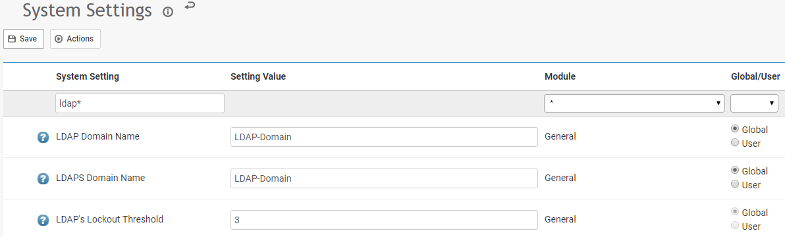
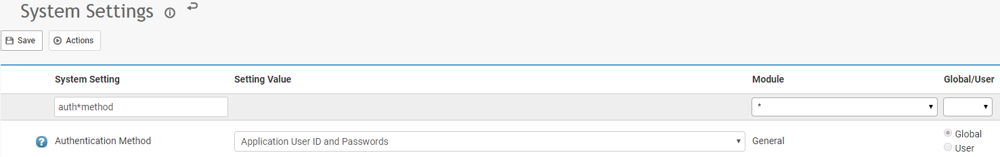

Cority supports the use of LDAP for authentication. This is useful if you wish to keep the password management and policies centralized.
When LDAP authentication is configured and enabled users will still be required to enter their username and password, but the authentication will be done by the LDAP server. Users must be setup in Cority with matching usernames on the LDAP server.
The admin user will still use local password management (bypassing the LDAP server) for authentication even when LDAP authentication is enabled. This is so that you can login to the application for maintenance even when the LDAP server is unavailable or configured incorrectly.
There are four system settings related to LDAP authentication. For descriptions of them, System Settings in this guide.
For security reasons, LDAP, LDAPS, and SSO Token should only be used by self-hosted clients. Cority-hosted clients should use SAML 2.0.

